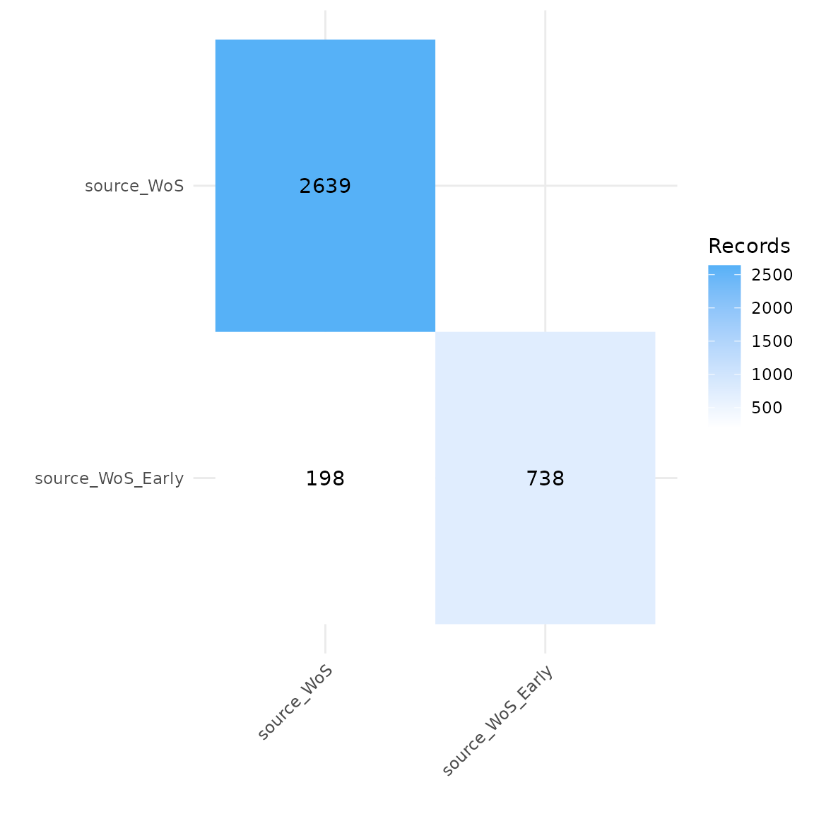

Deduplication issue 54
#Indicate location of citation files
citation_files <- list.files(path= "troubled_data", pattern = "\\.ris", full.names = TRUE)
citations <- read_citations(citation_files,
cite_sources = c("WoS", "WoS_early"),
tag_naming = "best_guess")
#> Import completed - with the following details:
#> file cite_source cite_string cite_label citations
#> 1 WoS_Early.ris WoS NA NA 2639
#> 2 WoS.ris WoS_early NA NA 738
dedup_results <- dedup_citations(citations, merge_citations = TRUE)
#> formatting data...
#> identifying potential duplicates...
#> identified duplicates!
#> merging citations...Resolved: Issue 51
#Indicate location of citation files
citation_files <- list.files(path= "troubled_data", pattern = "\\.ris", full.names = TRUE)
#Read citation files
citations <- read_citations(citation_files,
cite_sources = c("WoS", "WoS_Early"),
tag_naming = "best_guess")
#> Import completed - with the following details:
#> file cite_source cite_string cite_label citations
#> 1 WoS_Early.ris WoS NA NA 2639
#> 2 WoS.ris WoS_Early NA NA 738
citations %>% count(cite_source)
#> # A tibble: 2 × 2
#> cite_source n
#> <chr> <int>
#> 1 WoS 2639
#> 2 WoS_Early 738
dedup_results <- dedup_citations(citations, manual_dedup = FALSE, merge_citations = TRUE)
#> formatting data...
#> identifying potential duplicates...
#> identified duplicates!
#> merging citations...
unique_citations <- dedup_results$unique
#Create dataframe indicating occurrence of records across sources or labels
source_comparison <- compare_sources(unique_citations, comp_type = "sources")
plot_source_overlap_heatmap(source_comparison)